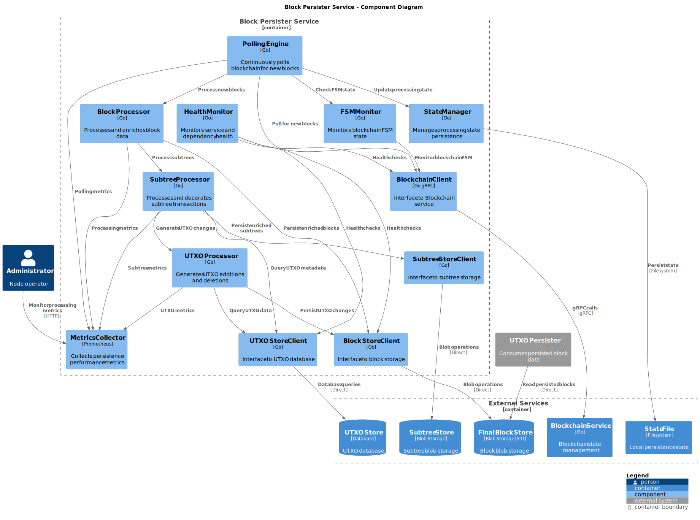
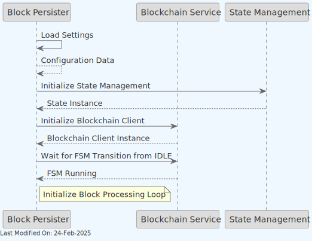
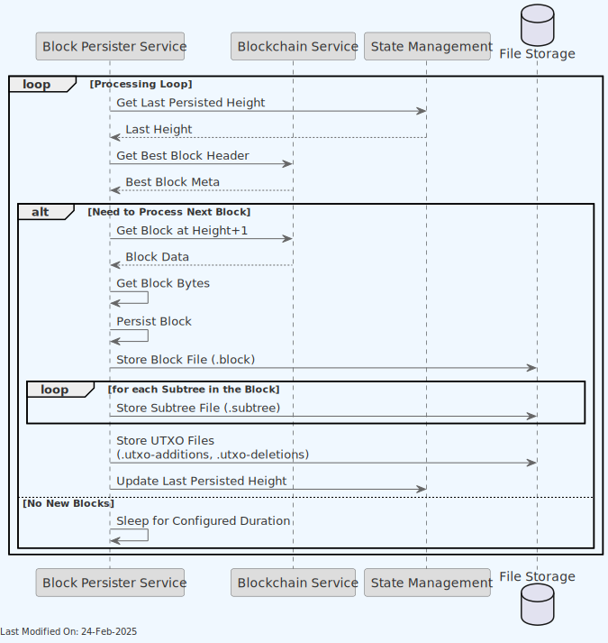
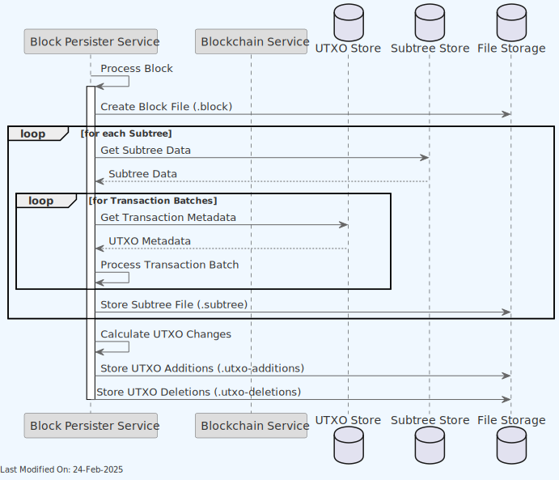

🔍 Block Persister Service
Index
- Description
- Functionality
- Data Model
- Technology
- Directory Structure and Main Files
- How to run
- Configuration options (settings flags)
- Other Resources
1. Description
The Block Persister service functions as an overlay microservice, designed to post-process subtrees after their integration into blocks and persisting them to a separate storage.
The Block Persister service operates as a background processing service that continuously polls the blockchain service for new blocks. Unlike other Teranode services, it does not expose a gRPC API and functions purely as a data persistence layer. When new blocks are detected through polling, the Block Persister service decorates (enriches) all transactions within the block's subtrees, ensuring the inclusion of transaction metadata (UTXO meta data). Then, it will save a number of files into a file storage system (such as S3):
- A file for the block (
.blockextension). - A file for each subtree in a block (
.subtreeextension), containing the decorated transactions. - A file for the UTXO Additions (
.utxo-additionsextension) per block, containing the newly created UTXOs. - A file for the UTXO Deletions (
.utxo-deletionsextension) per block, containing the spent UTXOs.
This service plays a key role within the Teranode network, guaranteeing that txs are accurately post-processed and stored with the essential metadata for necessary audit and traceability purposes. The decorated subtrees remain invaluable for future data analysis and inspection.
The Block Persister files are optionally post-processed by the UTXO Persister, which maintains a UTXO Set in a similar disk format.
Note: For information about how the Block Persister service is initialized during daemon startup and how it interacts with other services, see the Teranode Daemon Reference.

- The Block Persister polls the Blockchain service for new blocks and stores the decorated block in a data store (such as S3).

-
The Block Persister service operates independently by polling the Blockchain service directly for new blocks, rather than relying on external notification systems.
-
The Blockchain client is directly accessed to wait for the node State Management to change to
RUNNINGstate before beginning block processing operations. For more information on this, please refer to the State Management documentation.
Detailed Component View
The following diagram provides a deeper level of detail into the Block Persister Service's internal components and their interactions:

2. Functionality
2.1 Service Initialization

The service initializes through the following sequence:
- Loads configuration settings
- Initializes state management
- Establishes connection with blockchain client
- Waits for FSM transition from IDLE state
- Starts block processing loop
2.2 Block Discovery and Processing

The service processes blocks through a continuous polling mechanism:
-
Block Discovery
- Retrieves last persisted block height from the local state
- Polls the Blockchain service to get the current best block header
- Determines if new blocks need processing based on
BlockPersisterPersistAge. Blocks are only processed when(currentTip - lastPersistedHeight) > BlockPersisterPersistAge. This means the service intentionally stays at leastBlockPersisterPersistAgeblocks behind the tip to avoid reorgs and ensure block finality.
-
Processing Flow
- Retrieves the next block to process from the Blockchain service
- Converts block to bytes
- Persists block data to storage
-
Creates and stores the associated files:
-
Block file (.block)
- A Subtree file for each subtree in the block (.subtree), including the number of transactions in the subtree, and the decorated transactions (with UTXO meta data).
- UTXO additions (.utxo-additions), containing the UTXOs created in the block. This represents a list of new transaction outputs, including the Coinbase transaction outputs.
- UTXO deletions (.utxo-deletions), containing the UTXOs spent in the block. This represents a list of transaction inputs that reference and spend previous outputs.
- Updates the local state with the new block height
-
Sleep Mechanisms
- On error: the service sleeps for a 1-minute period before retrying
- If no new blocks: The service sleeps for a configurable period (
BlockPersisterPersistSleep) before polling again
-
Service Dependencies
- FSM State Dependency: The service waits for the blockchain FSM (Finite State Machine) to transition from the IDLE state to RUNNING before beginning block processing operations
- No gRPC API: Unlike other Teranode services, the Block Persister does not expose a gRPC API and operates purely as a background processing service
2.3 Subtree Processing Details

The detailed subtree processing workflow includes:
-
Subtree Retrieval
- Retrieves subtree data from the blockchain service
- Deserializes transaction data within the subtree
-
Transaction Metadata Loading
- Loads transaction metadata in batches for efficiency
- Decorates transactions with UTXO metadata
- Processes transactions individually if batch processing fails
-
File Creation
- Stores decorated subtree files (.subtree extension)
- Calculates and stores UTXO changes (additions and deletions)
- Updates the UTXO difference tracking
-
Concurrency
- Processes multiple subtrees concurrently using configurable concurrency limits
- Uses error groups to handle concurrent processing errors
3. Data Model
The Block Persister service data model is identical in scope to the Block Validation model. Please refer to the Block Validation documentation for more information.
In addition to blocks and subtrees, utxo additions and deletions files are created for each block, containing the newly created and spent UTXOs, respectively.
UTXO Files
.utxo-additions file
Content: A series of UTXO records, each containing:
- TxID (32 bytes)
- Output Index (4 bytes)
- Value (8 bytes)
- Block Height (4 bytes)
- Locking Script Length (4 bytes)
- Locking Script (variable length)
- Coinbase flag (1 bit, packed with block height)
Format: Binary encoded, as per the UTXO struct:
type UTXO struct {
TxID *chainhash.Hash
Index uint32
Value uint64
Height uint32
Script []byte
Coinbase bool
}
.utxo-deletions file
Content: A series of UTXO deletion records, each containing:
- TxID (32 bytes)
- Output Index (4 bytes)
Format: Binary encoded, as per the UTXODeletion struct:
type UTXODeletion struct {
TxID *chainhash.Hash
Index uint32
}
3.1 Storage Architecture
The Block Persister service uses two distinct storage buckets:
Block Store
The block-store bucket contains all the persistent data needed for blockchain reconstruction:
- Block files (
.block) - Complete serialized block data including all transactions - Detailed subtree files (
.subtree) - Complete transaction data for each subtree, containing full transaction contents - UTXO files (
.utxo-additions,.utxo-deletions,.utxo-set) - UTXO state changes and complete sets
Subtree Store
The subtree-store bucket contains lightweight subtree information:
- Lightweight subtree files (no extension) - Minimal transaction metadata (hash, fee, size)
- Optional meta files (
.meta) - Additional transaction metadata created by block validation
This dual-storage approach serves different purposes:
-
The subtree-store acts as a shared, lightweight transaction reference used by multiple services (block validation, subtree validation, block assembly, and asset services)
-
The block-store contains comprehensive blockchain data with complete transaction details needed for audit, analysis and blockchain reconstruction
If you need all transaction information in a subtree, you should access the .subtree file in the block-store bucket. If you only need basic transaction references (hashes, fees), you can use the more efficient files in the subtree-store bucket.
4. Technology
-
Go (Golang): The primary programming language used for developing the service.
-
Bitcoin SV (BSV) Libraries:
- Data Models and Utilities: For handling BSV blockchain data structures and operations, including transaction and block processing.
-
Storage Libraries:
- Blob Store: For retrieving the subtree blobs.
- UTXO Store: To access and store transaction metadata.
- File Storage: For saving the decorated block files.
-
Configuration and Logging:
- Dynamic Configuration: For managing service settings, including transaction metadata caching configurations and worker settings.
- Logging: For monitoring service operations, error handling, and debugging.
5. Directory Structure and Main Files
The Block Persister service is located in the services/blockpersister directory.
services/blockpersister/
├── state/ # State management
├── server.go # Main service implementation
└── metrics.go # Prometheus metrics
6. How to run
To run the Block Persister Service locally, you can execute the following command:
SETTINGS_CONTEXT=dev.[YOUR_USERNAME] go run -BlockPersister=1
Please refer to the Locally Running Services Documentation document for more information on running the Block Persister Service locally.
7. Configuration options (settings flags)
For comprehensive configuration documentation including all settings, defaults, and interactions, see the block Persister Settings Reference.